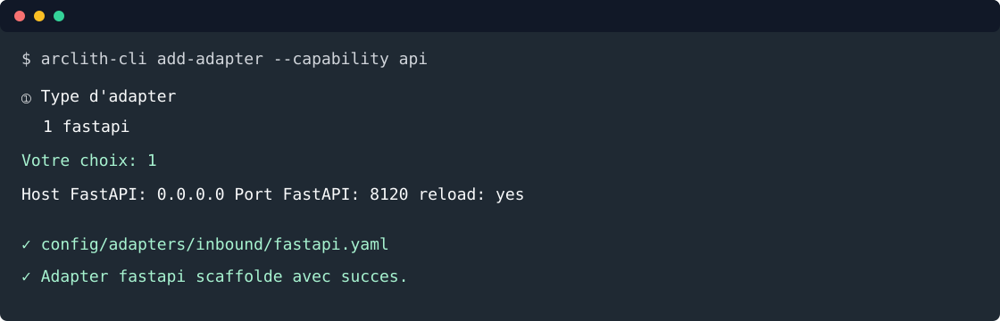

4. Exposer une API¶
Objectif: générer la configuration FastAPI avec la CLI, puis exposer CreateTodoUseCase par HTTP.

Depuis la racine du projet:
arclith-cli add-adapter --capability api
Répondre aux prompts:
① Type d'adapter
1 fastapi
Votre choix (numéro ou nom): 1
③ Paramètres fastapi
Host FastAPI (0.0.0.0): 0.0.0.0
Port FastAPI (8000): 8120
Activer le reload FastAPI [y/n] (y): y
Confirmer la génération ? [y/n] (y): y
La CLI crée:
config/adapters/inbound/fastapi.yaml
Schémas HTTP¶
Créer src/todo_list_service/adapters/inbound/schemas/todo_schema.py:
from __future__ import annotations
from datetime import date, datetime
from uuid import UUID
from pydantic import BaseModel, ConfigDict, Field
from todo_list_service.domain.models.todo import TodoStatus
class TodoCreateSchema(BaseModel):
title: str = Field(min_length=1, max_length=140)
description: str = Field(default="", max_length=4000)
due_date: date
status: TodoStatus = TodoStatus.TODO
completed_at: datetime | None = None
class TodoSchema(BaseModel):
model_config = ConfigDict(from_attributes=True)
uuid: UUID
title: str
description: str
due_date: date
completed_at: datetime | None
status: TodoStatus
created_at: datetime
updated_at: datetime
version: int
Créer aussi le package:
mkdir -p src/todo_list_service/adapters/inbound/schemas
touch src/todo_list_service/adapters/inbound/schemas/__init__.py
Router FastAPI¶
Créer src/todo_list_service/adapters/inbound/fastapi/routers/todo_router.py:
from __future__ import annotations
from fastapi import APIRouter, Request, Response
from arclith.domain.ports.outbound.repository import Repository
from todo_list_service.adapters.inbound.schemas.todo_schema import TodoCreateSchema, TodoSchema
from todo_list_service.application.use_cases.create_todo import CreateTodoCommand, CreateTodoUseCase
from todo_list_service.domain.models.todo import Todo
class TodoRouter:
def __init__(self, create_todo: CreateTodoUseCase, repository: Repository[Todo]) -> None:
self._create_todo = create_todo
self._repository = repository
self.router = APIRouter(prefix="/v1/todos", tags=["todos"])
self._register_routes()
def _register_routes(self) -> None:
self.router.add_api_route(
"/",
self.create_todo,
methods=["POST"],
response_model=TodoSchema,
status_code=201,
summary="Create todo",
)
self.router.add_api_route(
"/",
self.list_todos,
methods=["GET"],
response_model=list[TodoSchema],
summary="List todos",
)
async def create_todo(self, payload: TodoCreateSchema, response: Response, request: Request) -> TodoSchema:
todo = await self._create_todo.execute(
CreateTodoCommand(
title=payload.title,
description=payload.description,
due_date=payload.due_date,
status=payload.status,
completed_at=payload.completed_at,
)
)
response.headers["Location"] = f"{request.url.path.rstrip('/')}/{todo.uuid}"
return TodoSchema.model_validate(todo)
async def list_todos(self) -> list[TodoSchema]:
todos = await self._repository.find_all()
return [TodoSchema.model_validate(todo) for todo in todos]
Créer le package router:
mkdir -p src/todo_list_service/adapters/inbound/fastapi/routers
touch src/todo_list_service/adapters/inbound/fastapi/routers/__init__.py
Registration¶
Créer src/todo_list_service/adapters/inbound/fastapi/register.py:
from __future__ import annotations
from fastapi import FastAPI
from arclith import Arclith
from todo_list_service.adapters.inbound.fastapi.routers.todo_router import TodoRouter
from todo_list_service.infrastructure.containers.todo_container import (
build_create_todo_use_case,
build_todo_repository,
)
def register_routers(app: FastAPI, arclith: Arclith) -> None:
repository = build_todo_repository(arclith)
create_todo = build_create_todo_use_case(arclith)
app.include_router(TodoRouter(create_todo, repository).router)
Mettre à jour main.py:
"""Application entrypoint for todo-list-service."""
from __future__ import annotations
from pathlib import Path
from arclith import Arclith
from todo_list_service.adapters.inbound.fastapi.register import register_routers
_CONFIG = Path(__file__).parent / "config"
arclith = Arclith(_CONFIG)
app = arclith.fastapi()
register_routers(app, arclith)
def _run_api() -> None:
arclith.run_api("main:app")
if __name__ == "__main__":
arclith.run_with_probes(_run_api, transports=["api"])
Tester¶
Lancer les tests:
uv run python -m pytest
Lancer l'API:
uv run python main.py
Dans un autre terminal:
curl -fsS http://127.0.0.1:9000/health
curl -fsS -X POST http://127.0.0.1:8120/v1/todos/ \
-H "Content-Type: application/json" \
-H "Idempotency-Key: todo-demo-1" \
-d '{
"title": "Écrire le tutoriel",
"description": "Couvrir API, MCP et agent",
"due_date": "2026-09-01",
"status": "todo"
}'
curl -fsS http://127.0.0.1:8120/v1/todos/
La réponse POST doit contenir les champs de la todo créée, dont uuid, title, due_date,
status, created_at et version.
Voie rapide¶
arclith-cli add-adapter \
--capability api \
--adapter fastapi \
--param host=0.0.0.0 \
--param port=8120 \
--param reload=true \
--yes
Étape suivante: exposer un MCP.